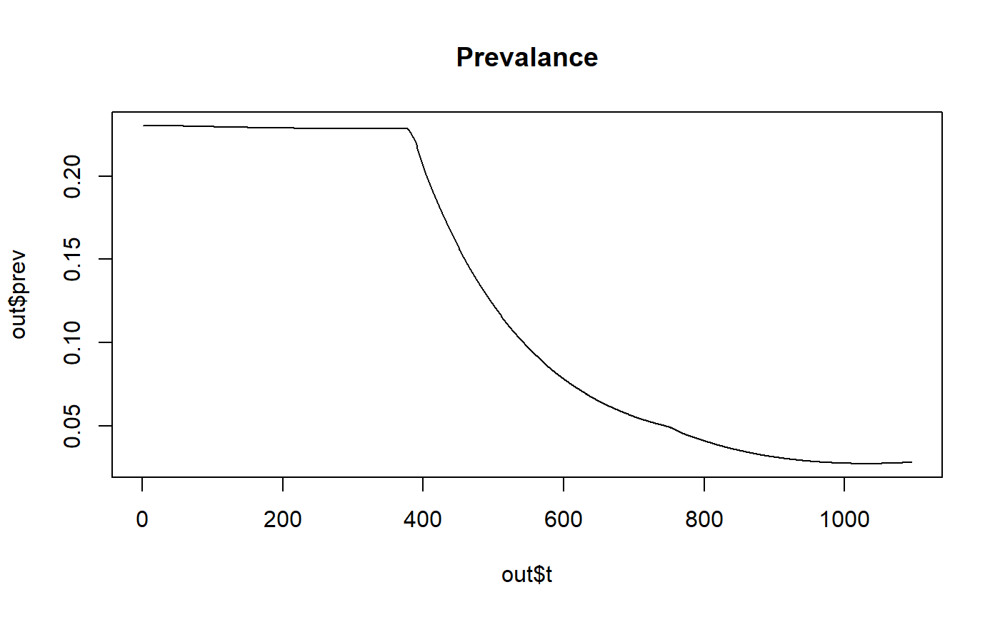
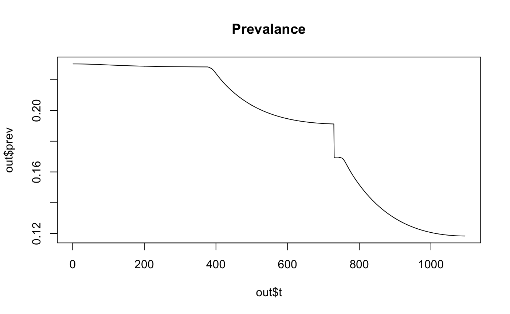

intro_to_nets.Rmd** This is work in progress and is only a very coarse approximate implementation. Speak to OJ or Ettie about ideas on how to improve. **
Varying insecticide treated net (ITNs) usage can be modelled with the default deterministic Imperial Malaria model. This is implemented by splitting the population into two different compartments:
Each of these compartments is then modelled separately, with all contributing to a share force of infection from humans to mosquitoes.
The default odin_model.R model, splits the population according to the ITN usage levels. However, this isn’t possible when the usage varys with time. Instead we can edit the equilibrium solution to split the population as desired. This variable is called `pop_split’ and is the percentage of the population in each of the intervention groups at all times. The default is to equally split the population into two so the whole population in one group does not die. This means that care needs to be taken to ensure that any outputs are correctly re-scaled to represent the population split at a given time. For example the prevalence is rescaled according to:
# Provides dimentions for the variable
dim(prev0to59) <- c(age59,nh,num_int)
# Computes prevalence in 1-59 month olds.
prev0to59[1:age59,,] <- T[i,j,k]*lagged_cov[k]/pop_split[k] + D[i,j,k]*lagged_cov[k]/pop_split[k] + A[i,j,k]*lagged_cov[k]/pop_split[k]*p_det[i,j,k]The coverage is lagged to reflect the lag in liver stage parasitemia. OJ and Ettie have come up with a better way to do this which has not been coded up yet.
Varying ITN usage is modelled by providing two vectors itn_vector and t_vector to the create_r_model function using the odin_model_itn.R version of the model. Here the itn_vector vector dictates how the ITN usage changes and t_vector is the time in days that the usage change at.
The edits to the equilibrium solution are made in a user defined function such as the one below:
edit_equilibrium_varying_nets <- function(wh, population_split){
# Need to add population split and use to edit initial conditions
wh$state$pop_split <- population_split # Population split
cov <- wh$mpl$cov
# This code here only works when IRS is turned off
# Divide the no intervention compartment by cov[1] to get original eqm soln
tmp_init_S <- wh$state$init_S[,,1] / cov[1]
wh$state$init_S[,,1] <- tmp_init_S * wh$state$pop_split[1]
wh$state$init_S[,,2] <- tmp_init_S * wh$state$pop_split[2]
tmp_init_T <- wh$state$init_T[,,1] / cov[1]
wh$state$init_T[,,1] <- tmp_init_T * wh$state$pop_split[1]
wh$state$init_T[,,2] <- tmp_init_T * wh$state$pop_split[2]
tmp_init_D <- wh$state$init_D[,,1] / cov[1]
wh$state$init_D[,,1] <- tmp_init_D * wh$state$pop_split[1]
wh$state$init_D[,,2] <- tmp_init_D * wh$state$pop_split[2]
tmp_init_A <- wh$state$init_A[,,1] / cov[1]
wh$state$init_A[,,1] <- tmp_init_A * wh$state$pop_split[1]
wh$state$init_A[,,2] <- tmp_init_A * wh$state$pop_split[2]
tmp_init_U <- wh$state$init_U[,,1] / cov[1]
wh$state$init_U[,,1] <- tmp_init_U * wh$state$pop_split[1]
wh$state$init_U[,,2] <- tmp_init_U * wh$state$pop_split[2]
tmp_init_P <- wh$state$init_P[,,1] / cov[1]
wh$state$init_P[,,1] <- tmp_init_P * wh$state$pop_split[1]
wh$state$init_P[,,2] <- tmp_init_P * wh$state$pop_split[2]
return(wh)
}An example of how the full similation is run is given below:
library(hanojoel)
# define the net usage
# need to define the coverage in the past so can have a usage using the delay
itn_vector <- c(0, 0.1, 0.3)
t_vector <- c(-25, 1*365, 2*365) # number of days at which the itn usage changes
ITN_IRS_on <- t_vector[min(which(itn_vector != 0))] # time at which nets switch on
population_split <- c(0.5, 0.5)
# creates the odin model
wh <- hanojoel:::create_r_model(odin_model_path = system.file("extdata/odin_model_itn.R",
package = "hanojoel"),
num_int = 2,
itn_vector = itn_vector,
t_vector = t_vector,
ITN_IRS_on = ITN_IRS_on)
# edits equilibrium condition with new coverage split.
wh <- edit_equilibrium_varying_nets(wh, population_split)
# generates model functions with initial state data
mod <- wh$generator(user= wh$state, use_dde = TRUE)
# Runs the model
mod_run <- mod$run(t = 1:(365*3))
out <- mod$transform_variables(mod_run)
plot(out$t, out$prev, type='l', col='black', main='Prevalance')
At present varing IRS has not been implemented. However, IRS can still be added to the model at a constant level as before. This needs the following additional function:
edit_equilibrium_varying_nets_irs <- function(wh, population_split){
# Need to add population split and use to edit initial conditions
wh$state$pop_split <- population_split # Population split
cov <- wh$mpl$cov
# This code here only works when IRS is turned off
# Divide the no intervention compartment by cov[1] to get original eqm soln
tmp_init_S <- wh$state$init_S[,,1] / cov[1]
wh$state$init_S[,,1] <- tmp_init_S * wh$state$pop_split[1]
wh$state$init_S[,,2] <- tmp_init_S * wh$state$pop_split[2]
wh$state$init_S[,,3] <- tmp_init_S * wh$state$pop_split[3]
wh$state$init_S[,,4] <- tmp_init_S * wh$state$pop_split[4]
tmp_init_T <- wh$state$init_T[,,1] / cov[1]
wh$state$init_T[,,1] <- tmp_init_T * wh$state$pop_split[1]
wh$state$init_T[,,2] <- tmp_init_T * wh$state$pop_split[2]
wh$state$init_T[,,3] <- tmp_init_T * wh$state$pop_split[3]
wh$state$init_T[,,4] <- tmp_init_T * wh$state$pop_split[4]
tmp_init_D <- wh$state$init_D[,,1] / cov[1]
wh$state$init_D[,,1] <- tmp_init_D * wh$state$pop_split[1]
wh$state$init_D[,,2] <- tmp_init_D * wh$state$pop_split[2]
wh$state$init_D[,,3] <- tmp_init_D * wh$state$pop_split[3]
wh$state$init_D[,,4] <- tmp_init_D * wh$state$pop_split[4]
tmp_init_A <- wh$state$init_A[,,1] / cov[1]
wh$state$init_A[,,1] <- tmp_init_A * wh$state$pop_split[1]
wh$state$init_A[,,2] <- tmp_init_A * wh$state$pop_split[2]
wh$state$init_A[,,3] <- tmp_init_A * wh$state$pop_split[3]
wh$state$init_A[,,4] <- tmp_init_A * wh$state$pop_split[4]
tmp_init_U <- wh$state$init_U[,,1] / cov[1]
wh$state$init_U[,,1] <- tmp_init_U * wh$state$pop_split[1]
wh$state$init_U[,,2] <- tmp_init_U * wh$state$pop_split[2]
wh$state$init_U[,,3] <- tmp_init_U * wh$state$pop_split[3]
wh$state$init_U[,,4] <- tmp_init_U * wh$state$pop_split[4]
tmp_init_P <- wh$state$init_P[,,1] / cov[1]
wh$state$init_P[,,1] <- tmp_init_P * wh$state$pop_split[1]
wh$state$init_P[,,2] <- tmp_init_P * wh$state$pop_split[2]
wh$state$init_P[,,3] <- tmp_init_P * wh$state$pop_split[3]
wh$state$init_P[,,4] <- tmp_init_P * wh$state$pop_split[4]
return(wh)
}library(hanojoel)
# define the net usage
# need to define the coverage in the past so can have a usage using the delay
itn_vector <- c(0, 0.1, 0.3)
t_vector <- c(-25, 1*365, 2*365) # number of days at which the itn usage changes
ITN_IRS_on <- t_vector[min(which(itn_vector != 0))] # time at which nets switch on
population_split <- c(0.25, 0.25, 0.25, 0.25)
# creates the odin model
wh <- hanojoel:::create_r_model(odin_model_path = system.file("extdata/odin_model_itn.R",
package = "hanojoel"),
num_int = 4,
itn_vector = itn_vector,
t_vector = t_vector,
irs_cov = 0.2,
ITN_IRS_on = ITN_IRS_on)
# edits equilibrium condition with new coverage split.
wh <- edit_equilibrium_varying_nets_irs(wh, population_split)
# generates model functions with initial state data
mod <- wh$generator(user= wh$state, use_dde = TRUE)
# Runs the model
mod_run <- mod$run(t = 1:(365*3))
out <- mod$transform_variables(mod_run)
plot(out$t, out$prev, type='l', col='black', main='Prevalance')